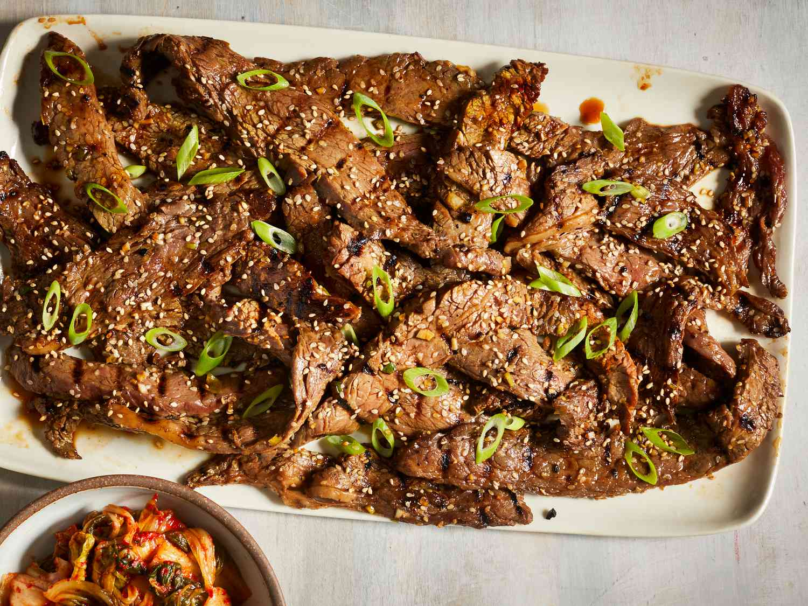

Delicious Korean Recipes
Kimchi
Description: A traditional Korean dish made from fermented vegetables, mainly cabbage, and radishes, seasoned with chili pepper, garlic, and other spices.
Ingredients:
- 1 medium napa cabbage
- 1/4 cup sea salt
- 1 tablespoon grated ginger
- 2 cloves garlic (minced)
- 1 tablespoon fish sauce
- 1 tablespoon chili powder
- 1 tablespoon sugar
Preparation Steps:
- Cut the cabbage into pieces and sprinkle with salt. Let sit for 1-2 hours.
- Rinse the cabbage and mix with the chili powder, garlic, ginger, sugar, and fish sauce.
- Pack the mixture tightly into a jar and leave at room temperature for 2-3 days to ferment.
- Refrigerate once fermented to store for later use.
Bibimbap

Description: A mixed rice dish topped with a variety of vegetables, a fried egg, and spicy gochujang (Korean chili paste).
Ingredients:
- 2 cups cooked rice
- 1 cup spinach (blanched)
- 1/2 cup bean sprouts
- 1 carrot (julienned)
- 1 egg (fried)
- 1 tablespoon gochujang (Korean chili paste)
- Sesame oil and sesame seeds for garnish
Preparation Steps:
- Place the cooked rice in a bowl.
- Arrange the vegetables and egg on top of the rice.
- Add a spoonful of gochujang and drizzle with sesame oil.
- Top with sesame seeds and mix well before eating.
Bulgogi
Description: A Korean barbecue dish made with marinated beef, grilled to perfection and often served with rice.
Ingredients:
- 1 lb beef (thinly sliced)
- 1/4 cup soy sauce
- 2 tablespoons sesame oil
- 1 tablespoon sugar
- 3 cloves garlic (minced)
- 1/2 onion (finely chopped)
- 1 tablespoon gochujang (optional)
Preparation Steps:
- Mix all ingredients together to make the marinade.
- Marinate the beef for at least 30 minutes, or up to overnight.
- Grill or stir-fry the beef until cooked through.
- Serve with rice and vegetables.
Japchae
Description: A savory-sweet dish made with stir-fried glass noodles and vegetables, sometimes including beef or other proteins.
Ingredients:
- 1 package sweet potato noodles (dangmyeon)
- 1 cup spinach
- 1 carrot (julienned)
- 1/2 onion (sliced)
- 1/4 cup soy sauce
- 1 tablespoon sesame oil
- 1 tablespoon sugar
Preparation Steps:
- Boil the noodles according to package instructions, then drain and set aside.
- Stir-fry the vegetables and meat (if using) in sesame oil until tender.
- Add the noodles and soy sauce, mixing well to combine.
- Serve with a sprinkle of sesame seeds and enjoy!
Tteokbokki
Description: A popular Korean street food made with chewy rice cakes, fish cakes, and a spicy-sweet sauce.
Ingredients:
- 1 lb rice cakes (tteok)
- 1/2 cup fish cakes
- 1/4 cup gochujang (Korean chili paste)
- 2 tablespoons sugar
- 2 cups water
Preparation Steps:
- Boil water and add gochujang and sugar to make the sauce.
- Add rice cakes and fish cakes to the sauce and simmer until tender and heated through.
- Serve hot, garnished with sesame seeds or chopped scallions.